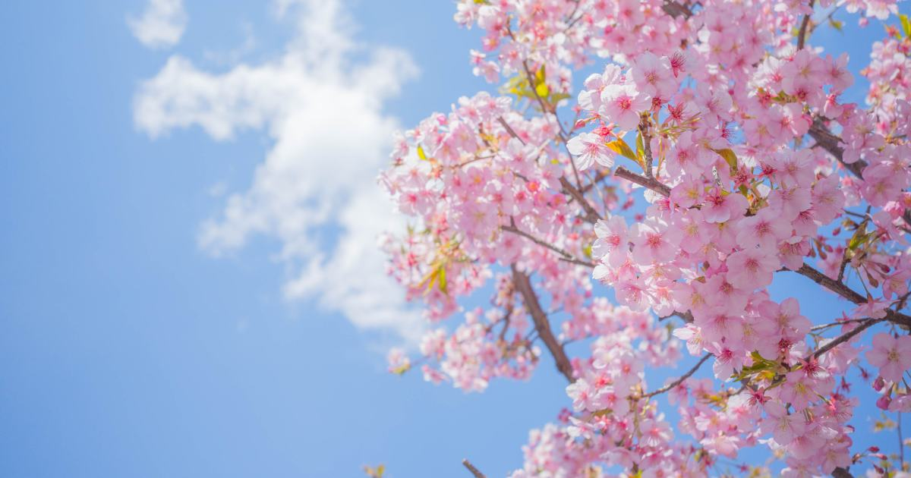
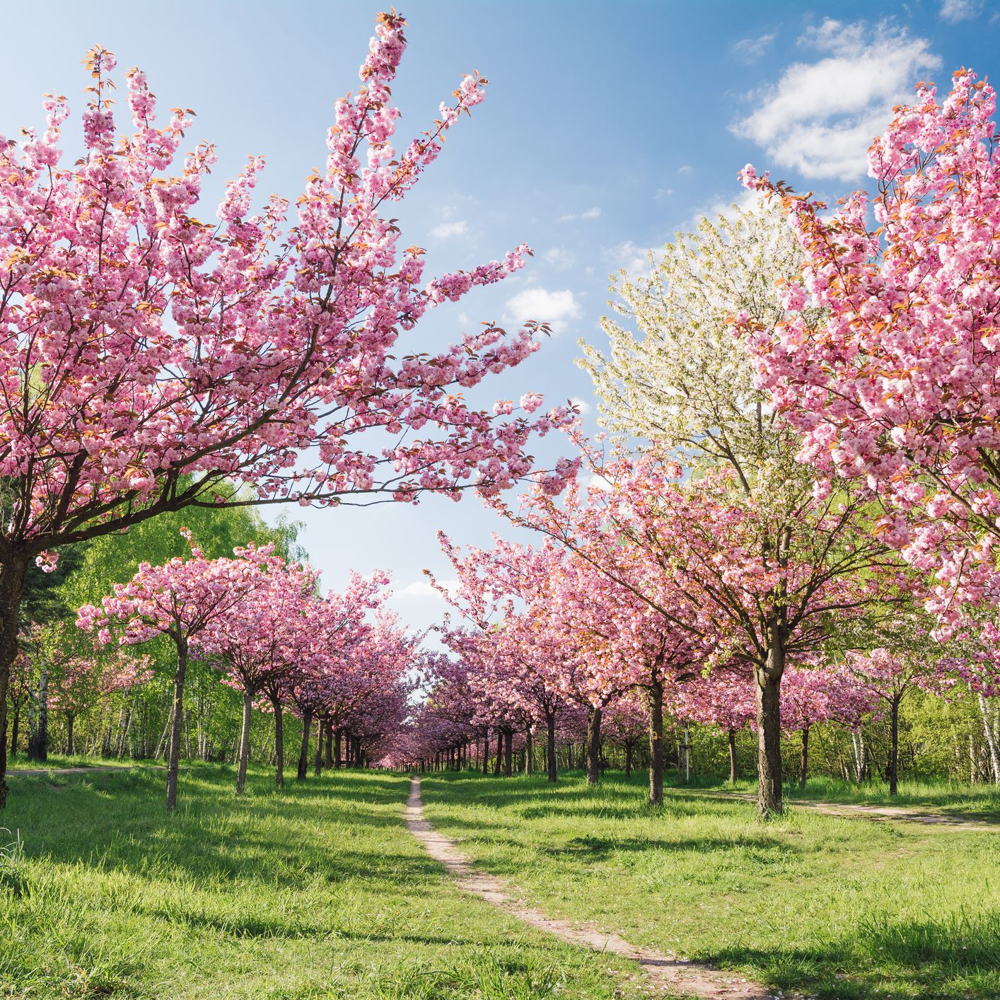
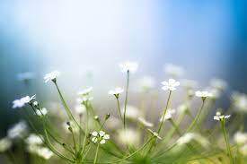
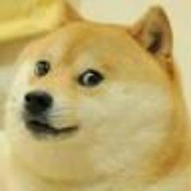

|  |  |  |
|
|
||
Căţeluşul şchiopEu am numai trei picioare, Şi de-abia mă mişc: ţop, ţop, Râd când mă-ntâlnesc copiii, Şi mă cheamă „cuciu şchiop”. Fraţii mei ceilalţi se joacă Cu copiii toţi, dar eu Nu pot alerga ca dânşii, Că sunt şchiop şi cad mereu! Şi stau singur toata ziua Şi plâng mult când mă gândesc Că tot şchiop voi fi de-acuma Şi tot trist am să trăiesc. Şi când mă gândesc ce bine M-aş juca şi eu acum, Şi-aş lătra şi eu din poartă La copiii de pe drum! Cât sunt de frumoşi copiii Cei cuminţi, şi cât de mult Mi-ar plăcea să stau cu dânşii, Să mă joc şi să-i ascult! Dar copiii răi la suflet Sunt urâţi, precum e-acel Care m-a şchiopat pe mine, Şi nu-i pot iubi defel… M-a lovit din răutate Cu o piatră în picior, Şi-am zăcut, şi-am plâns atâta, De credeam că am să mor… Acum vine şi-mi dă zahăr Şi ar vrea să-mi fie bun, Şi-aş putea să-l muşc odată De picior, să mă răzbun, Dar îl las aşa, să vadă Răul, că un biet căţel Are inima mai bună Decât a avut-o el. |
||